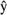

| [ Team LiB ] |
|
16.2 Optimization ProblemThe term optimization implies a best value for some type of performance criterion. This performance criterion is known as an objective function. Here, we first discuss possible objective functions, then possible process models that can be used for MPC. Objective FunctionsHere, there are several different choices for objective functions. The first one that comes to mind is a standard least-squares or "quadratic" objective function. The objective function is a "sum of squares" of the predicted errors (differences between the setpoints and the model-predicted outputs) and the control moves (changes in control action from step to step). A quadratic objective function for a prediction horizon of 3 and a control horizon of 2 can be written where  represents the model predicted output, r is the setpoint, Du is the change in manipulated input from one sample time to the next, w is a weight for the changes in the manipulated input, and the subscripts indicate the sample time (k is the current sample time). For a prediction horizon of P and a control horizon of M, the least-squares objective function is written Another possible objective function is to simply take a sum of the absolute values of the predicted errors and control moves. For a prediction horizon of 3 and a control horizon of 2, the absolute value objective function is which has the following general form for a prediction horizon of P and a control horizon of M: The optimization problem solved is usually stated as a minimization of the objective function, obtained by adjusting the M control moves, subject to modeling equations (equality constraints), and constraints on the inputs and outputs. Least-squares formulations are by far the most common objective functions in MPC. Least squares yields analytical solutions for unconstrained problems and penalizes larger errors (relatively) more than smaller errors. The absolute value objective function has been used in a few algorithms because a linear programming (LP) problem results. LPs are routinely solved in large-scale scheduling and allocation problems. For example, an oil company often uses an LP to decide how to distribute oil to various refineries and to decide how much and what product to produce at each plant. This topic was discussed in Chapter 15. The LP approach is not useful for model predictive control, because the manipulated variable moves often "hop" from one extreme constraint to another. For the rest of this chapter we use a quadratic (least squares) formulation for the objective function. ModelsMany different types of models are possible for calculating the predicted values of the process outputs, which are used in evaluating the objective function. Since the outputs are evaluated at discrete-time steps, it makes sense to use discrete models for the output prediction. Here, we review step and impulse response models (introduced in Chapter 4), both of which are used in common MPC algorithms. Finite Step ResponseFSR models are obtained by making a unit step input change to a process operating at steady state. The model coefficients are simply the output values at each time step, as shown in Figure 16-2. Here, si represents the step response coefficient for the ith sample time after the unit step input change. If a non-unit step change is made, the output is scaled accordingly. Figure 16-2. Illustration of step response parameter identification.The step response model is the vector of step response coefficients,
where the model length N is long enough so that the coefficient values are relatively constant (i.e., the process is close to a new steady state). Finite Impulse ResponseAnother common form of model is a finite impulse response (FIR). Here, a unit pulse is applied to the manipulated input, and the model coefficients are simply the values of the outputs at each time step after the pulse input is applied. As shown in Figure 16-3, hi represents the ith impulse response coefficient. Figure 16-3. Illustration of impulse response parameter identification.There is a direct relationship between step and impulse response models: Figure 16-4 illustrates how impulse response coefficients can be obtained from step responses. The impulse response coefficients are simply the changes in the step response coefficient at each time step. Similarly, step response coefficients can be found from impulse responses; a step response coefficient is the sum of the impulse response coefficients to that point. It should be noted that there are two major limitations to step and impulse response models. They can only be used to represent open-loop stable processes, and they require a large number of parameters (model coefficients) compared to state space and transfer function models. Figure 16-4. Obtaining impulse response models from step response data.
|
| [ Team LiB ] |
|